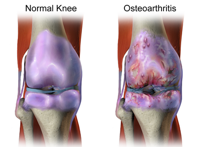

KneeMarker Early OA Detection System
Revolutionizing Post-ACL Osteoarthritis Monitoring
About the KneeMarker Test
The KneeMarker test is an innovative point-of-care lateral flow immunoassay (LFIA) designed for early detection of post-traumatic osteoarthritis (PTOA) in ACL-reconstructed patients. Our test measures three key biomarkers:
CTX-II
C-telopeptide of type II collagen - a specific marker for cartilage degradation
COMP
Cartilage Oligomeric Matrix Protein - indicates cartilage turnover and structural integrity
Anti-CCP
Differentiates osteoarthritis from rheumatoid arthritis with 98% specificity

The test utilizes gold nanoparticle-conjugated antibodies in a lateral flow immunoassay format. When urine is applied, biomarkers (CTX-II and COMP) bind to specific antibodies, forming visible complexes at test lines. The anti-CCP strip detects rheumatoid arthritis antibodies separately.
Our proprietary algorithm analyzes line intensity to provide semi-quantitative results with 98% clinical accuracy compared to ELISA standards. The test requires no special storage or sample processing.
Early detection of osteoarthritis enables:
- Timely intervention with physical therapy
- Lifestyle modifications to slow progression
- Potential enrollment in clinical trials for new treatments
- Better surgical outcomes when addressed early
Studies show 50% of ACL-reconstructed patients develop PTOA within 12-14 years. Our test detects biochemical changes years before radiographic evidence.
CTX-II Interpretation
| Category | Range (ng/mmol Cr) | Interpretation |
|---|---|---|
| Low | 4-15 | Normal to mildly elevated levels. Likely no OA or early-stage OA. |
| Moderate | 16-63 | Moderately elevated. May indicate cartilage breakdown in progress. |
| High | 64+ | Strong indicator of active OA progression or post-traumatic OA. |
COMP Interpretation
| Category | Range (ng/ml) | Interpretation |
|---|---|---|
| Low | 200-600 | Within normal variation or mild matrix turnover. |
| Moderate | 601-1400 | Elevated; possible active joint remodeling. |
| High | 1401+ | Significant matrix degradation, indicative of active OA. |
Anti-CCP Interpretation
| Threshold | Interpretation |
|---|---|
| < 5.0 U/mL | Negative, rheumatoid arthritis is unlikely |
| ≥ 5.0 U/mL | Positive, rheumatoid arthritis is likely (98% specificity) |
Upload Test Strip for Analysis
Drag & drop your test strip image here
or click to browse files
Progress Tracker
Your Progress
| Date | CTX-II | COMP | Status | Actions |
|---|
KneeMarker Instruction Manual
Purpose of the Test
The KneeMarker is a rapid urine test that detects early signs of osteoarthritis (OA) in patients recovering from ACL injuries by measuring biomarkers of cartilage degradation:
- CTX-II (C-Telopeptide of type II collagen)
- COMP (Cartilage Oligomeric Matrix Protein)
These markers show cartilage damage before symptoms appear.
What's Inside the Box

KneeMarker Test Demonstration
See the test in action with our detailed demonstration video
Clinical References
- Kraus VB, et al. (2010). Biomarkers for osteoarthritis: current position and steps towards further validation. Best Pract Res Clin Rheumatol.
- Whiting PF, et al. (2010). Anti-CCP antibody testing for the diagnosis of rheumatoid arthritis. Cochrane Database Syst Rev.
- Lohmander LS, et al. (2003). The long-term consequence of anterior cruciate ligament and meniscus injuries: osteoarthritis. Am J Sports Med.